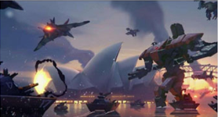
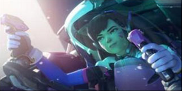

技能
《守望先锋》创造性的将射击和"英雄"结合，每个英雄都拥有自己标志性的武器和技能。游戏中的英雄来自不同的国家，人设风格既有美国漫画风格又有英雄所在国家的民族风格。
技能
技能是《守望先锋》英雄们的独特武器，用技能来击败对手、保卫盟友或是进行快速移动，合理应用技能就是瀛得比赛的关键。最常用的就是主武器的自动射击。不论玩家的武器是短距武器、长距武器、喷射武器还是投射武器，玩家不需要为其寻找弹药，只需要使用装填就能保持输出◎有些武器有第二种攻击模式,这时就需要使用另一个射击按钮。
不同的英雄具有的移动或支援技能也完全不同，譬如有些能放置光子哨戒炮，有些能使用音乐加速﹑有些能使用短距离传送。很多技能都具有冷却时间，一次使用后必须等待一段时间才能再度使用。近战攻击
英雄类型
每个英雄都可以使用近战攻击，近战攻击是一次快速的短距离政击，不需要消耗任何弹药。可以使用近战攻击来终结涨临死亡的敌人或者在弹药装填的间隙维续造成伤害。
终极技能
终极技能是威力强大的技能,可以改变比赛的局势。随着比赛的进行。终极技能会缓慢充能，当玩家益成伤害时也会获得充能·只要玩家不改变英雄,即使死亡后玩家的充能进度也不会消失。